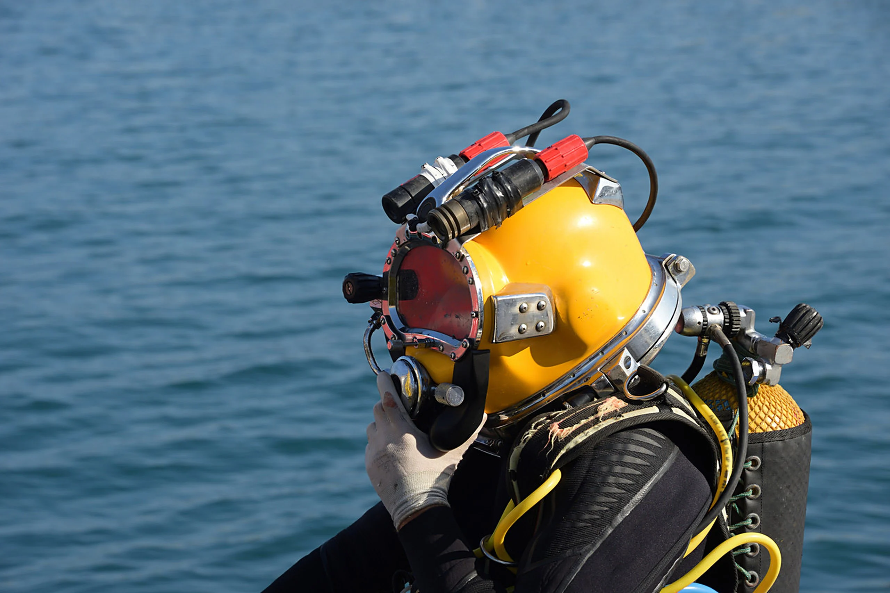
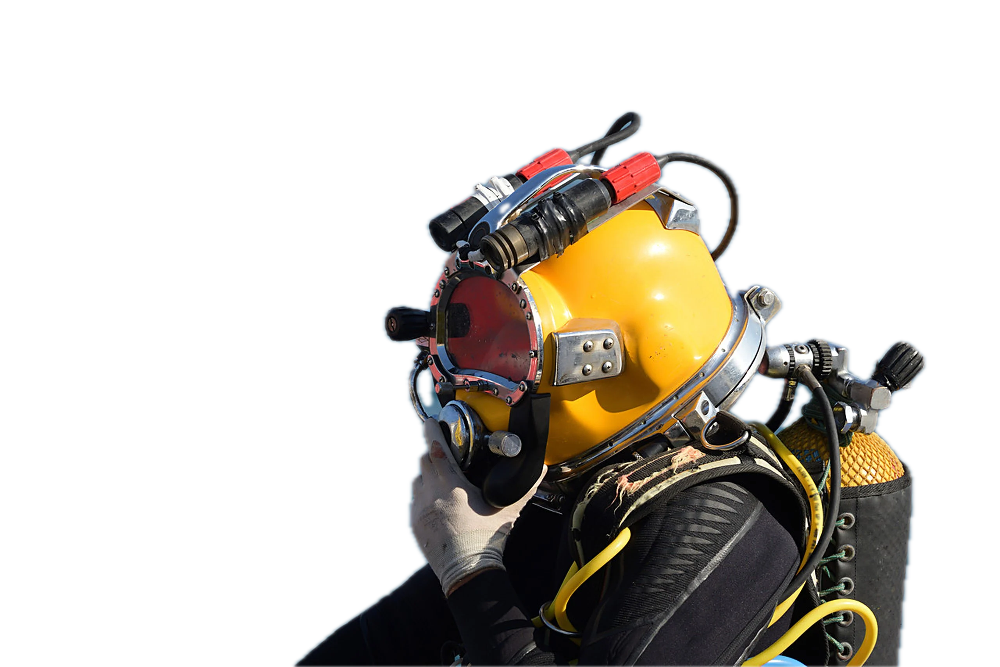

PT / EN◐Contato

01 · Mergulho
+300 mergulhadores profissionais · 13 sistemas para operar até 50 m
01 · Mergulho
Toda descida começa com uma pessoa. A Oceânica forma a própria equipe, em centro de treinamento próprio, com tanques próprios.
01 · Mergulho
0 m
Até 50 metros,
mãos humanas.

02 · Descida
01 · Mergulho
+300 mergulhadores profissionais